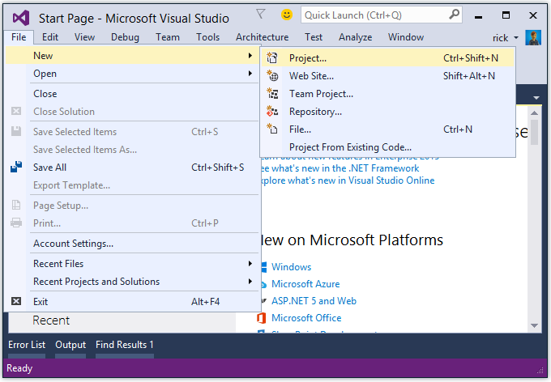

Getting started with ASP.NET Core MVC and Visual Studio¶
This tutorial will teach you the basics of building an ASP.NET Core MVC web app using Visual Studio 2015.
Install Visual Studio and .NET Core¶
- Install Visual Studio Community 2015. Select the Community download and the default installation. Skip this step if you have Visual Studio 2015 installed.
- Install .NET Core + Visual Studio tooling
Create a web app¶
From the Visual Studio Start page, tap New Project.

Alternatively, you can use the menus to create a new project. Tap File > New > Project.
Complete the New Project dialog:
- In the left pane, tap Web
- In the center pane, tap ASP.NET Core Web Application
- Name the project “MvcMovie” (It’s important to name the project “MvcMovie” so when you copy code, the namespace will match. )
- Tap OK

In the New ASP.NET Core Web Application - MvcMovie dialog, tap Web Application, and then tap OK.
Warning
You must have the Authentication set to Individual User Accounts in this release for the scaffolding engine to work.
Visual Studio used a default template for the MVC project you just created, so you have a working app right now by entering a project name and selecting a few options. This is a simple “Hello World!” project, and it’s a good place to start,
Tap F5 to run the app in debug mode or Ctl-F5 in non-debug mode.
- Visual Studio starts IIS Express and runs your app. Notice that the address bar shows
localhost:port#and not something likeexample.com. That’s becauselocalhostalways points to your own local computer, which in this case is running the app you just created. When Visual Studio creates a web project, a random port is used for the web server. In the image above, the port number is 1234. When you run the app, you’ll see a different port number. - Launching the app with Ctrl+F5 (non-debug mode) allows you to make code changes, save the file, refresh the browser, and see the code changes. Many developers prefer to use non-debug mode to quickly launch the app and view changes.
- You can launch the app in debug or non-debug mode from the Debug menu item:
- You can debug the app by tapping the IIS Express button
The default template gives you working Home, Contact, About, Register and Log in links. The browser image above doesn’t show theses links. Depending on the size of your browser, you might need to click the navigation icon to show them.
In the next part of this tutorial, we’ll learn about MVC and start writing some code.